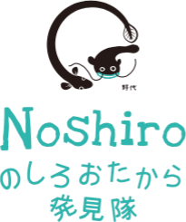

のしろおたから発見隊とは
「のしろ地区（多度東地区）」には、代々受け継がれてきた文化がありながら、少子高齢化等の時代の流れの中で継承することが難しくなっています。
この隠れた地区の文化を掘り起こし、形あるものとして残していくことで、地域の活性化が促されると考えました。
そこで、眠っている文化を【たから】に見立て、「地域の皆んなで『たからさがし』をして、楽しく・住み良い元気なまちづくりをめざしていきたい！」と考え、多くの方々に訪れて頂けるよう活動隊を立ち上げました。